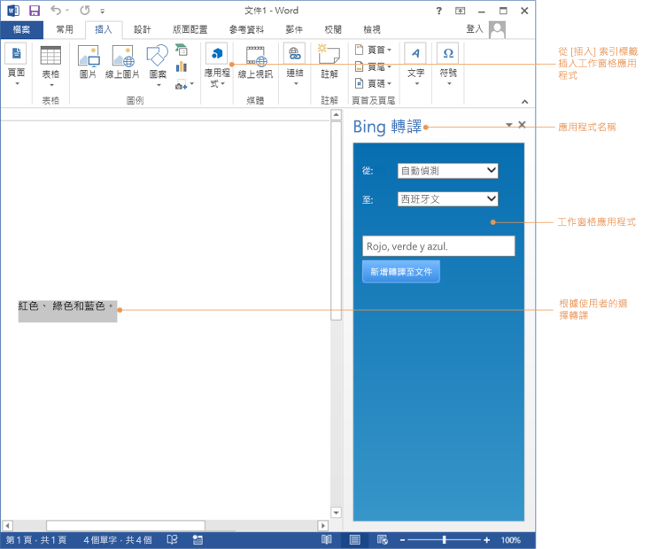
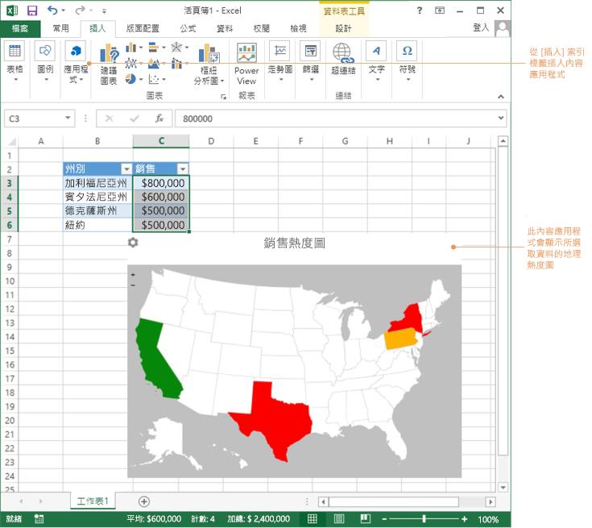
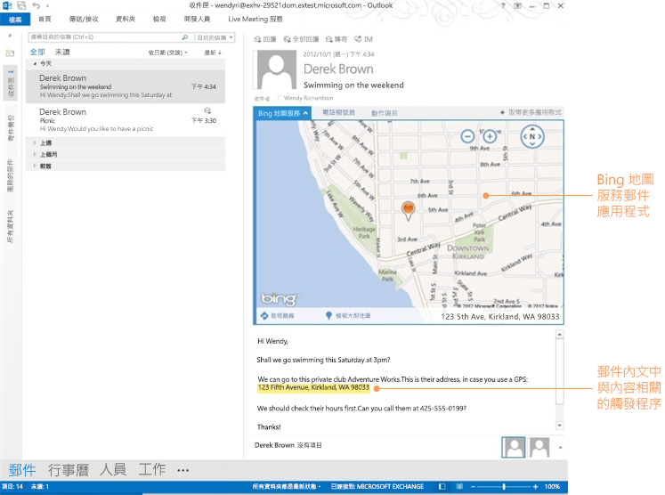

Curriculum Page
Office 增益集平台概述
本文內容
Office 增益集 是什麽？
Office 增益集是一個裝載於瀏覽器控制項的Web 應用程式或是執行在 Office 應用程式內容中的iframe 。
開發增益集的工具有幾種：
Office 增益集的基本元件
Office 增益集的基本元件是 XML 資訊清單檔案和增益集的預設網頁。
資訊清單 + 網頁 = Office 增益集

資訊清單可指定增益集的設定及功能，例如下列：
- 實施增益集 UI 及程式設計邏輯之網頁的 URL。
- 增益集的顯示名稱、描述、識別碼、版本及預設地區設定。
- 增益集的啟動和顯示方式：
- 與文件互動的增益集形式為工作窗格，或內嵌在文件內容中。
- 與郵件項目 (郵件或約會) 互動的增益集：在閱讀或撰寫項目時。
- 增益集的權限層級和資料存取需求。
Office 增益集的類型
Office 增益集有三種類型 ：工作窗格、內容及 Outlook。
工作窗格增益集
工作窗格增益集能與 Office 文件并行運作，并可讓您提供關聯式資訊和功能，以強化文件檢視及撰寫體驗。例如，工作窗格增益集可以根據文件中選取的產品名稱或組件編號在 Web 服務查詢并擷取產品資訊。
工作窗格增益集
若要在 Excel 2013、Excel Online 或 Word 2013 中嘗試工作窗格增益集，請安裝維基百科增益集。
內容增益集
內容增益集會將 Web 式功能在文件內容中嵌入及顯示。內容增益集可讓您把豐富的 網絡視覺資料、內嵌的媒體 (例如 YouTube 視訊播放程式或圖片庫) ，以及其它外部內容集成在文件中。
內容增益集
若要在 Excel 2013 或 Excel Online 中嘗試內容增益集，請安裝 Bing 地圖服務增益集。
Outlook 增益集
當您檢視或撰寫 Outlook 項目時，Outlook 增益集會顯示在該項目旁邊。在讀取案例中 (使用者檢視收到項目時) 或在撰寫案例中 (使用者回覆或建立新的項目時)，它們可以與電子郵件、會議邀請、會議回覆、會議取消或約會搭配使用。
| 注意事項 | |
| Outlook 增益集需要最低的版本爲 Exchange 2013 或 Exchange Online 來主控使用者的信箱。不支援 POP 和 IMAP 電子郵件帳戶。 |
讀取案例中的 Outlook 增益集
若要在 Outlook、Outlook for Mac 或 Outlook Web App 中嘗試 Outlook 增益集，請安裝 Package Tracker 增益集。
案例
- 翻譯精靈 - Word 工作窗格增益集，會自動將選取的文字從文件語言翻譯為下拉式清單中選取的其他語言。
- 建立圖表 - Excel 內容增益集，會從選取的資料建置自動圖表。
- 第三方服務整合 - Word 或 Excel 工作窗格增益集，會自動顯示與選取的文字對應的維基百科頁面。
- 豐富的資料結合 - Excel 中的 Bing 地圖內容增益集，會繪製石油公司的近岸設備及資源位置，包括從公司資源管理系統取得這項即時資訊。
- 規格驗證 - 飛機元件設計規格的小節或段落會被標示為過期，因為 Word 工作窗格增益集會與商務系統通訊，以將內容與最新的規格驗證。
- 開始工作流程 - Outlook 增益集，可以協助您根據範本建立訊息或會議邀請、插入會議位置的詳細資訊或使用者選擇的簽章，以及附加相關的文件。
- 訂單詳細資料呈現在內容 - 這個 Outlook 增益集可偵測電子郵件中內嵌採購單號碼或客戶編號的郵件，并在郵件中呈現訂單或客戶的詳細資料。這可能包括要採取的動作，例如核准。
支援 Office 增益集的 Office 應用程式
| Office 應用程式 | 內容增益集 | Outlook 增益集 | 工作窗格增益集 | |
| Access Web App | ||||
| Excel 2013 或更新版本 | ||||
| Excel Online | ||||
| Outlook 2013 或更新版本 | ||||
| Outlook for Mac | ||||
| Outlook Web App | ||||
| PowerPoint 2013 或更新版本 | ||||
| PowerPoint Online | ||||
| Project 2013 或更新版本 | ||||
| Word 2013 或更新版本 | ||||
| Word Online |
Office 增益集開發週期
請參考以下内容來計畫開發工作窗格、 內容和 Outlook 的Office增益集。開發 Office 增益集的一些有用的工具:
- 免費的Visual Studio 2015 Community Edition 與 Microsoft 開發人員工具或
- Napa Office 365 Development Tools (您可以從Office 365 開發者帳戶使用Napa開發工具或通過您個人的Microsoft Account 來登入Napa)。
- 決定增益集的目的。
- 識別資料及增益集的資料或數據來源。
- 識別開發增益集的類型和 Office 最佳支援的增益集用途的主機應用程式的類型。
- 爲增益集設計與實施使用者體驗及使用者介面。
- 建立根據Office 增益集資訊清單結構描述的 XML 資訊清單檔案。
- 安裝及測試增益集。
- 發佈增益集。
- 更新增益集